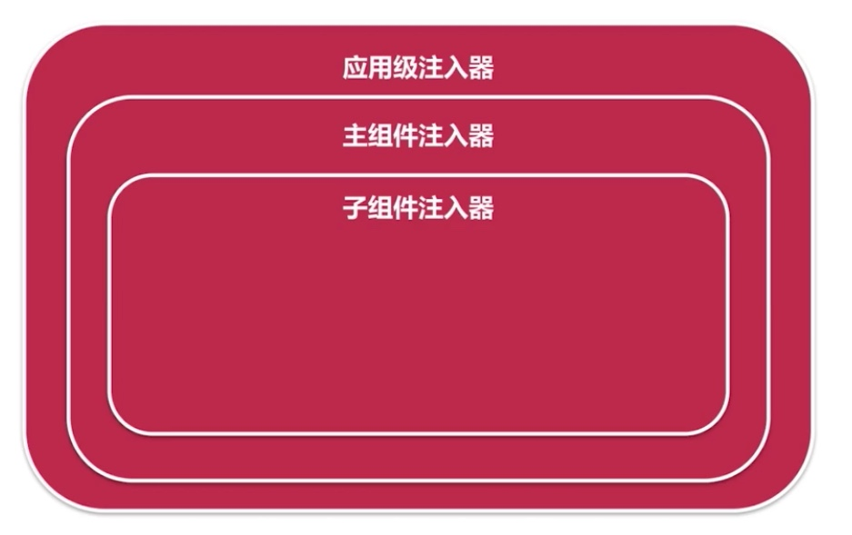
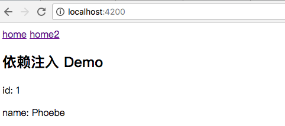
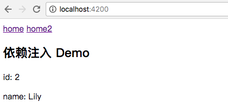
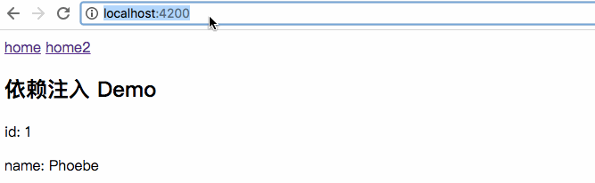

注入器（provider）与提供器（injector）是依赖注入必不可少的两个方面。
注入器（injector）
注入器的作用是将实例化的对象注入到组件中。
Angular 提供的服务类，一般情况下不需要直接调用注入器的方法，而是通过组件的构造函数将服务对象
product.component.ts
1 | constructor(productService: ProductService){ |
注入器的层级关系
Angular 会首先创建一个「应用级的注入器」，把模块(module.ts)中声明的提供器(providers 数组)都注册到「应用级的注入器」上，还包括所有引用的模块(imports 数组)中所注册的提供器。

然后 Angular 会启动主组件，同时「应用级的注入器」会为主组件创建一个「组件级注入器」，并将组件中声明的提供器注册到「组件级的注入器」上。
如果主组件的模版引入了子组件，通过选择器方式或子路由引入子组件，子组件被创建时，父组件的注入器会为每个子组件创建子组件的注入器，然后把子组件的提供器注册到子组件的注入器上。
最后，所有的注入器会形成与组件关系相同的层级关系。
注入器的寻找策略
在使用时，组件会先查找自身是否注册了需要的提供器，如果没有，则对父组件进行查找，以此类推，直到「应用级注入器」的提供器，并根据找到的提供器的配置来实例化对象。
如果一直到应用级的注入器都没有找到符合条件的提供器，则会抛出异常。
注: Angular 只有一个注入点，即构造函数。因此，如果构造函数上没有注入，则没有引入任何服务。这是 Angular 与其它框架的差别之处。
手工创建注入器
在 Angular 中，注入器的寻找是完全由 Angular 自动完成的，我们不需要手工进行寻找。
下面我们来写如何手工创建一个注入器：
1 | import { Component, OnInit, Injector } from '@angular/core'; |
下面两种代码是等价的：
1 | constructor(public injector: Injector) { |
通过上边的代码我们可以发现注入的本质，Angular 把自身注入器注入到组件的构造函数中，组件向注入器请求所需要的服务，注入进来的并不是 HomeService！而是通过调用 injector.get() 方法获得的。
注：应避免这种写法。原因在于很难通过参数知道真正注入的是什么服务。
除非我们无法判定需要注入哪些服务，才考虑用该种方法。
提供器（provider）
提供器是用于实例化对象。
useClass 方法
Angular 在 providers 寻找实例，如果找到，则会注入到 productService 对象中。
模块层级中 providers 的写法：
app.module.ts
1 | // 简写方法 |
provide 指定了 token, useClass 为实例化的具体类名，使用的是 new 操作符实例化对象的方法。如果 provide 与 useClass 属性值同名，则可以简写，否则需要使用下面的方法：
1 | providers: [{provide: ProductService, useClass: AnotherProductService}] |
这种方法相当于使用 new 运算符实例化一个方法。
useFactory 方法
使用工厂方法注入，它会把工厂方法返回的实例注入 productService 属性中。
app.module.ts
1 | providers: [{provide: ProductService, useFactory: () => {...}}] |
useValue 方法
使用值注入，通过该方法可以将变量进行注入。
1 | providers: [{provide: 'IS_DEV_ENV', useValue: false}] |
使用new方法(useClass)声明提供器
下面通过一个简单的例子来实现一个服务的提供器和注入器。
首先用 Angular 命令行工具建立一个组件 home 和相应的服务 home.service。我们希望做的是通过 home.service 获得一个包含 id 和 name 的对象。
1 | ng g component home |
1. home.service.ts
服务的相关逻辑写在 service.ts 中，这里我们实现了一个 getInfo() 方法，可以获取一个 Info 的实例。
home.service.ts
1 | import { Injectable } from '@angular/core'; |
2. home.component.ts
在 home 组件中利用构造函数使用服务。
home.component.ts
1 | import { Component, OnInit } from '@angular/core'; |
3. home.component.html
模版中进行引用
1 | <h2>依赖注入 Demo</h2> |
4. app.module.ts
在 app.module.ts 中的 providers 进行声明：
1 | ... |

下面我们来讨论一些更复杂的问题，首先就是提供器的作用域。
提供器的作用域
在上面的例子中，我们将提供器写在 app.module.ts 文件中，也就是模块级别的。事实上，提供器也可以声明在组件中。
我们建立一个新的组件 home2 和新的服务 AnotherHomeService 来演示这个例子。
1.another-home.service.ts
AnotherHomeService 实现了 HomeService 接口。
1 | import { Injectable } from '@angular/core'; |
2.home2.component.ts
在这个例子中，我们将 provider 声明在组件内，而没有在 app.module.ts 中进行声明。
在构造函数中，我们写的仍然是 constructor(public homeService: HomeService)，因为它的类型是 HomeService，而非 AnotherHomeService。
1 | import { Component, OnInit } from '@angular/core'; |
3. home2.component.html
模版中进行引用
1 | <h2>依赖注入 Demo</h2> |
打开浏览器，我们会发现已经注入了 AnotherHomeService：

总结
当 provider 声明在模块(module)中，它是对所有组件可见的。例如 HomeComponent，虽然未在组件中声明，但是可用的。
当 provider 声明在组件(component)中，它只对声明的组件和子组件可见。
当 provider 同时声明在模块和组件中，组件中的 provider 会将模块中的 provider 覆盖。
provider 应优先声明在模块中，只有对某个组件不可见时，才应考虑声明在组件中。
Injectable()
我们会发现使用 AngularCli 工具创建组件时会在 component 中默认添加这样一行代码 @Injectable：
home.service.ts
1 | @Injectable() |
Injectable() 是指当前服务中还可以依赖其他服务，也就是能够通过构造函数注入其他的服务。
注：这里并不是指当前服务是否能注入到其他服务中，当前服务能否注入到其他服务这是由是否在 provider 中声明决定的。
下面的例子实现了服务中（HomeService 服务）注入了其他服务（AnotherHomeService 服务）：
home.service.ts
1 | import { Injectable } from '@angular/core'; |
总结
- 只有声明了
@Injectable()才可以注入其他服务，建议不管是否需要依赖其他服务，都加上该解释器。 @Component、@Pipes等都是@Injectable()的子类，因此无需声明也能注入其他的服务。
使用工厂方法(useFactory)声明提供器
上边的例子中我们都使用下面的语法来声明提供器，这种写法默认使用 new 操作符来创建实例。
1 | providers: [{provide: HomeService, useClass: AnotherHomeService}] |
如果我们服务对象无法用简单的 new 来进行实例化，例如在某些条件下实例化某个对象，或实例化对象时需要传递参数等，则需要使用工厂方法来声明一个提供器。
下面举个例子，实现根据随机数来随机声明 HomeService 或 AnotherHomeService 中的其中一种。
app.module.ts
1 | ... |
我们在浏览器中不断刷新会发现随机输出不同的值，表明确实是随机调用了不同的 service 服务：

注：如果多个组件同时使用该工厂方法声明提供器，那么这些组件返回的随机结果是完全相同的。这意味着工厂方法创建出的是一个单例对象，它只会在第一个需要注入的对象时被调用一次，所有注入的实例都是同一个对象。
进一步思考上面的代码，我们在工厂方法内部使用了服务(HomeService和AnotherHomeService)依赖于另一个服务(LoggerService)，我们手工实例化了一个服务（LoggerService），说明工厂方法与 LoggerService 是强耦合的。
事实上，我们工厂方法下方就声明了 LoggerService 的提供器。
1 | providers: [ |
如何在工厂方法中使用已声明的提供器呢？
1 | ... |
deps 的数组中注明了工厂方法的参数分别使用了哪些提供器。
当工厂方法被调用时，会根据 deps 数组中的 token 内容去找。在本例中，deps 的数组中只有一项 LoggerService，因此就会去寻找 LoggerService 在哪里声明，然后实例化该对象，返回给服务的参数。
注：deps 中依赖的服务，仍然可以是工厂方法创建的，因此可能存在一个深层的依赖关系，而组件并不需要关心这其中的依赖关系，它们被屏蔽在组件之外。
使用值(useValue)方法声明提供器
我们在实际项目中不可能依赖一个随机数来决定使用哪个服务，通常情况下，我们可能会依赖某个变量的值。那么提供器中可以注入变量吗？答案是肯定的。
1 | ... |
注入之前，使用变量来声明一个提供器，即用值(useValue)来声明一个提供器：
1 | {provide: 'IS_DEV_ENV', useValue: false} |
然后我们在 deps 数组中追加一项：
1 | deps: [LoggerService, "IS_DEV_ENV"]} |
就可以在 useFactory 中以参数的形式传入了。